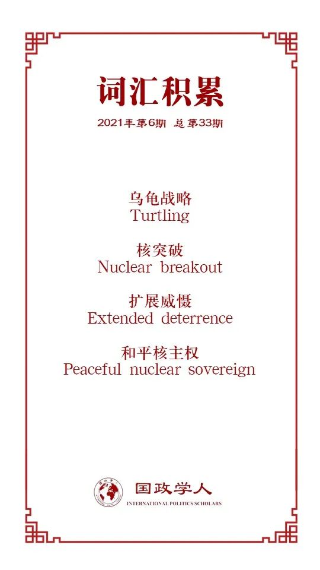

收录于合集

作品简介
【作者】 Eric Heginbotham，麻省理工学院国际问题研究中心首席研究员，曾任兰德公司高级研究员，主要研究方向为中日两国的外交与战略政策，核战略以及美国对亚洲的政策；
Richard Samuels，麻省理工学院国际问题研究中心主任教授、主要研究方向为日本政治与亚洲安全。
【编译】 黎开朗 （国政学人编译员，立命馆大学国际关系学院）
【校对】 徐一君 杨朔
【审核】 唐一鸣
【排版】 黄晨蕊
【美编 】杜丛竹
【来源】 Eric Heginbotham & Richard J. Samuels (2021) Vulnerable US Alliances in Northeast Asia: The Nuclear Implications, The Washington Quarterly, 44 :1, 157-175, DOI:10.1080/0163660X.2021.1894709
【归档】 《国际关系前沿》2021年第6期，总第33期。
期刊简介
美国《华盛顿季刊》( The Washington Quarterly )是国际事务领域的季刊杂志，由战略与国际研究中心（CSIS）创办，艾略特国际事务学院（乔治·华盛顿大学）和泰勒弗朗西斯集团共同承办，主要分析全球安全、外交关系和公共政策的影响等。该期刊2019的影响因子为1.288。
东北亚脆弱的美国同盟：
**核影响
**
Vulnerable US Alliances in Northeast Asia:
The Nuclear Implications
Eric Heginbotham
Richard Samuels
内容提要
尽管东北亚的危机与挑战在日益增加，美国对其盟友的安全承诺却越发变得不稳定。特朗普希望通过更为不确定的信号来让盟友做的更多，使其能够实现自主防御或是对美国经费等方面的支持。为了对抗美国的不确定性，日韩趋向于发展更具有进攻性的体系，并逐渐远离基于其角色和任务的军事专业化。虽然美国欢迎盟友增加国防预算，但盟友采取的方法也让联盟动态变得更加复杂，削弱了联盟的稳定性及对中国的制衡力。日韩两国关于核武器的讨论的扩大应该是最令人震惊的。作者认为尽管核武器会让日韩提高国防实力，但并不一定会对制衡有所帮助，反而会导致出现“乌龟战略”（turtling）（译者注：指拥有强大国防能力的同时缺乏攻击性），让日韩成为逐渐适应中国的中立武装国。
本文作者主要提供了政策性的建议，让美国对于东北亚的同盟做出调整而不是抛弃。作者首先指出了两大变化： 过去二十年间的均势已转向利于中国的一边和美国支持深度介入海外事务的国内共识正逐渐减弱。 接着，作者论述了这些变化如何使得日韩开始寻求对现状的替代方案(如核突破（nuclear breakout）等）。最后作者考察了对美国而言削弱的同盟所带来的后果，以及应该采取怎样的办法去避免核扩散和在新的战略环境下支撑其同盟。
文章导读
01
安全环境
作者首先指出上述两大变化对日韩两国的影响以及各自的应对方法。日本在过去20年里的制衡姿态变得越来越坚定，而韩国的政策则更倾向于缓和与中国的关系。
（一）均势的变化
这一小节作者主要探讨了中国的实力增长和韩国的脆弱性。作者首先分析了中日韩三国的经济，指出不管是从经济增速还是总量来看，日韩都已不可与中国相提并论，这也使得中国在国防支出方面上可以成倍地超过日韩两国。从军事角度来看，中国的综合能力明显强于日本，作者指出目前中国的军事实力在各方面都很强大，并且正在着手提高剩下的短板。
作者接着讨论了相较于日本而言，韩国的脆弱性。作者认为这种脆弱性很大程度上来源于韩国的地理位置。尽管日韩两国都面临着来自朝鲜的核威胁，但是相较于日本，韩国在面对朝鲜的常规武器方面更具有明显的脆弱性。此外，韩国处于第一岛链，就算有美国的帮助，韩国在面临中国的封锁或者攻击时也依然十分脆弱。
（二） 美国对深度介入全球事务共识的终结
日韩两国在面临更具挑战的安全环境的同时，还必须应对一个质疑其战后深度介入全球事务共识的美国。美国总统特朗普认为盟友的存在限制了美国的选项，使其耗尽了资源，这让日韩领导人感到无比的焦虑。新上任的拜登虽然有着不同的优先事项，但对于他将如何引导国内选民和国外盟友仍有待观察。虽然民主党内部在是否增加国防开支问题上还存在分歧，但可以肯定的是拜登会改善与盟友之间的关系，这也引出了当发生冲突时美国是否愿意，以及是否有能力保护其盟友等新的问题。
以上的两大变化使得日韩开始重新评估寻求更大的自主性这一选项。同时两国也注意到了美国国内政治的演变可能会进一步削弱其对海外承诺的支持。
02
日本：维护区域均势的同时寻求方案B
尽管日本在过去15年里已经采取了各种外交和军事手段来与美国一起制衡中国，但日本为了对冲在特朗普时期的联盟退化和中国崛起，开始寻求方案B。作者指出了这些提案包含了四种战略要素： 提高传统国防能力，深化与区域安全伙伴的关系，可能包含有与中国调解的合作安全协定以及核武器。 接着作者具体列出了三个选项： 1.加强日本自身的军事实力；2.深化与志同道合国家之间的战略关系；3. 重新平衡日本在中美之间的位置。 然而作者认为以上三个选项并不会从根本上改变局势，均势的变化让日本对美国的安全承诺心生怀疑的同时也会削弱日本对自主国防的预期，并且仅凭日本自身的实力或是与其他弱国进行联盟无法弥补其传统国防能力上的巨大差距。
由此，作者对最后一个选项核武器展开了讨论。在过去数十年里，日本战略学家一致认为只要美国的扩展威慑（extended deterrence）是有效的，日本就不会寻求核突破。而如今日本的一些主流战略家开始质疑美国扩展威慑的可信度，日本前防卫大臣石破茂曾公开声称日本应该修改“无核三原则”（不制造、不拥有、不运进核武器），并且一些日本智库研究员也认为日本退出核不扩散条约，成为核国家将是一个可能的选项。然而日本政府也知道此举可能会招致公众反感，于是便将注意力放在了加强美国的扩展核威慑（核保护伞）上。但是从调查问卷结果来看，日本民众对于核武器的反感情绪正在逐渐减退，日本前驻美大使也表示日本应该重新审视无核三原则。
03
韩国：有限的外交选项，扩展自主防御
作者首先论述了韩国国内两派阵营的不同。进步派把降低安全风险作为短期目标，把朝鲜半岛的统一作为长期目标，在具体政策上寻求改善与中国等邻国的关系，减少由美国同盟带来的限制。保守派虽然也支持和平统一朝鲜半岛，但却降低了与朝鲜关系的优先级并拒绝给予朝鲜无条件的援助，在具体政策上则倾向于加强与美日之间的同盟。在逐渐恶化的国际环境中，进步与保守两派的操作空间都受到了限制。进步派通过2017年萨德事件认识到了与美国同盟关系的重要性以及中国并不是一个十分理想的伙伴。保守派虽然长期对中国持有怀疑态度，但却避免与中国产生不必要的敌对。并且在特朗普上台以后，与朝鲜的敌对关系有所缓和的同时，美国把对朝鲜的压力逐渐转移到了韩国上，甚至还要求韩国对其给予资金支持否则就将减少驻韩美军。美国的此举无疑是重创了保守派对美国的信心。在此背景之下，寻求自主防御已经成为了一个重要的选项。
而更令人惊讶的变化是在韩国国内两个阵营里讨论“核选项”的越来越多。韩国的精英越来越清楚在无政府状态下国家对其自身的防御负有根本责任，支持核武器逐渐成为了一种潮流。韩国保守党派的领导人就对是否拥有核武器以及应该以怎样的一种形式持有核武器各抒己见。而在原本对核武器嗤之以鼻的进步派中，支持核武器的声音也是逐渐高涨。除此之外，从调查问卷中可以看出，在韩国支持加强核威慑也有很强的民意基础。并且在“和平核主权”（peaceful nuclear sovereign）的原则之下，韩国开展了收集核武器零部件的计划。此外，韩国也在不断提高自身的导弹能力，并且把弹道导弹囊括进了“积极威慑”战略之中，既可装载传统武器弹头，又可在核突破时装载核武器弹头。
04
削弱的同盟带来的后果
总的来看，美国与日本一致的利益要多于与韩国一致的利益。尽管美国国内对于介入全球事务的支持在减弱，但制衡中国仍是美国外交政策的首要目标。而日本也把中国的崛起看作是其主要挑战，并采取了政策来制衡中国。然而，韩国国内不管是进步派还是保守派都没有制衡中国的意愿。虽然在制衡中国这个问题上美日韩有分歧，但美国与东北亚国家之间同盟的瓦解无疑会损害三国的利益。如果美韩同盟破裂，在面对周围的三个拥核邻国再加上与日本的不和，韩国将会不堪一击。鉴于韩国国内精英对加强核威慑的必要性日益达成共识，可预见韩国将会认为确保核武器是重要的。如果联盟的破裂是迅速且彻底的话，韩国将无法在没有受到来自中国的巨大压力的情况下获得核武器，并且可能会被朝鲜先发制人或者是威胁。在这种情况下，韩国只有秘密地获得核武器。虽然在拜登政府期间，联盟破裂的危险性有所降低。但由于朝鲜核武器能力的提升以及美国削减国防开支等因素都有可能会削弱韩国对同盟的信任。因此即便是联盟没有彻底破裂，韩国仍有可能采取核军备的路线来进行对冲，而美国最终可能会对韩国持有核武器采取默许的态度。
而美日同盟虽然相比较美韩同盟更为稳定。但日本的核对冲已经包括了既有的火箭以及先进的导弹，并且其国内对于加强核威慑的讨论也在日益增加。虽然日本退出核不扩散条约将同时引发国内的声讨和国际社会的惩罚，但日本相比较韩国对外部核武器材料依赖较少，科技水平也更高。然而，不管在日本还是韩国，核突破的出现都将加剧另一方的不安全感。此外，核武器既不能恢复地区的均势，也不能限制中国。如果一个或者两个同盟瓦解，那么日本和韩国将趋向于采取不符合美国利益的策略。具体来讲就是“乌龟战略”，即致力于保护本国的独立，却很有可能在其他重要问题上迁就中国。总的来看，尽管日韩两国有军事自主，即便是在核突破的条件之下，区域经济和政治秩序反映出的也只会是中国的优先事项。
05
政策建议
针对如何避免上述的结果，作者给出了四条政策性建议。
第一，鉴于保持地区均势符合美国的利益，美国应该维持和支持与东北亚盟友的双边同盟关系。 作者还建议应该为包括“四方对话”的多边防御协议敞开大门，并且强调维持同盟不能仅靠外交，保持美国的军事实力也同样重要。尽管在目前美国国内新冠的肆意横行等国内优先事项不可避免地会需要对预算做出调整，但整体性地削减国防开支毫无疑问会对战备产生影响。因此作者建议调整应从长远发展并仔细拟定，政策决策者应该避免突然中断计划安排或是损害发展应对亚洲突发情况的军事能力。
第二，美国应该调整其责任分担的方式。 作者认为通过协商，而不是直接要求同盟的方式会更容易被其接受。具体来讲，作者认为按比例的增加国防开支将带来更大的整体联盟资源的收益，并且强调标准应该一致。比如韩国每年的国防开支高于GDP的2.5%，而日本的国防开支仅约为GDP的1%。因此，作者认为为日本国防开支制定明确的目标并监督日本是否达成这些目标才是一种明智的方法。
第三，美国及其盟友应该重新讨论东北亚盟友的传统角色、任务和分工。 作者认为美国应该和其盟友必须有效地部署有限的资源。考虑到每个盟友的相对优势，以及和平时期军队的位置和进入战区的时间不同，盟友的军队结构不必与美国完全一样。然而为了对冲美国不确定的承诺，日韩的军队结构正在日益趋同。
第四，美国需要解决盟友的“核不安全感”，同时阻止其走向核突破。 作者认为在盟友的担忧难以被抚平以及核不扩散符合美国利益的情况之下，美国需要考虑其他方法来防止盟友视核选项为其最佳选项。有的人认为应该把核武器放回韩国，虽然这样做会释放出积极的威慑信号，但同时成本和风险也会增加。还有一些人建议以北约为模板，在亚洲成立一个多边核规划组织，但这也需要之前亚洲未曾有的更高水平的安全合作，以及在国内政治方面进行更全面的协调，并且在缺乏类似北大西洋理事会的情况下也很难起到有效的威慑作用。此外，还可以采取在韩国和日本建立单独的核规划小组，并探讨韩国和日本在战时共享核武器的接受程度（在美国控制之下以及核不扩散条约框架内）。
最后作者再次强调了美国应对东北亚同盟框架做出调整，主张应承认美国是地区国家团结在一起的力量支柱，同时承认新的地区现实的政策才能最符合美国的利益。
译者评述
本文作为一篇政策性的文章，分析了日韩为何以及如何对冲美国的不稳定承诺以及地区均势的变化，并且探讨了日韩两国可能出现的核突破选项。本文最大的贡献在于最后作者提出的四个政策性建议，来试图让美国规避对其利益有害的情况。核武器作为一个国际关系领域老生常谈的话题，其重要性不言而喻。但最近也有学者指出在美国的战略中，逐渐出现了“核武器的边缘化”，甚至可以说是到了“忘却了核武器”的情况。[1]然而目前世界上的核国家还相对较少，对于日韩这样寄于他人“核保护伞”之下的国家而言，需要时刻关注提供核保护国家的承诺是否可信。承诺越不稳定，发展自己核武器的可能性也自然会增加。而作者敏锐的察觉到了这一点，深入探讨了东北亚盟友对于当美国的承诺不太稳定之时的种种反应以及发展自己核武器的可能性。总的来看，虽然日韩都有发展核武器的想法，韩国发展自己核武器的可能性相对于日本更高一些。
虽然作者的论述有理有据，令人信服，但从译者的角度来看本文还是有不足的地方。首先作者在论述为何日韩要寻求自主防御甚至是发展自己的核武器时，给出的地区均势的变化以及美国给出的承诺不稳定等理由都是外部的理由，忽视了内部的声音。比如前日本内阁官房副长官柳泽协二在接受朝日新闻采访时就提到，日本的安全和美国主导的国际秩序并不一致，日本必须要思考没有美军驻扎在日本时应该怎么办。[2]其次，从作者的观点来看，美日同盟比美韩同盟相对来讲更加稳定牢固的主要原因在于美国与日本一致的利益更多，这点固然没错。然而正如作者所观察到的那样，韩国承担的军费比例为其GDP的2.5%以上，而日本仅停留在1%，尽管韩国承担了相对来讲更多的军费比例，但却仍然受到了来自美国的压力，这样必然会导致韩国心理上的不满。因此对日偏袒的战略所导致的韩国心理上的不满也是美韩军事同盟不稳定的重要原因之一，但作者却缺乏对此原因的具体阐述。
对于作者提出的四项政策性建议，译者也基本赞同。但同时译者也认为作者的政策建议之中也有自相矛盾的地方。比如在责任分担这个问题上，作者认为应该给日本设立一个国防开支的目标让其执行。然而如果日本增加了军费开支，就意味着日本自主防御能力的提高，并且有可能会让日本进一步误认为美国不想承担防卫任务，最后反而有可能会导致“乌龟战略”的出现，这就与作者试图避开盟友采取“乌龟战略”的目的相矛盾。而译者认为出现这种矛盾的根本原因在于美国无法像过去一样给盟友提供足够多的军事保护。事实上作者也认识到了这个问题，所以才强调维持美国军事能力的重要性。但如今美国的实力无法与其冷战后的单极时刻相提并论，并且再加上国内新冠肆虐，种族矛盾等一系列国内问题也会进一步削弱美国的国力。换言之，如今美国面临的问题是其目前的能力无法为盟友提供足够的安全保障，美国需要其盟友分担防卫的责任。从这个角度来看，作者所设想的“承认美国是地区国家团结在一起的力量支柱”的政策恐怕也很难被其东北亚同盟所认同。
注释
[1]高橋杉雄・秋山信将「『核の復権』の現実」、秋山・高橋編著『「核の忘却」の終わり―核兵器復権の時代』、（勁草書房、2019年、1―16ページ）。
[2]朝日新聞「北朝鮮と米艦防護」（2017年8月22日、朝刊12ページ）。
词汇整理

文章观点不代表本平台观点，本平台评译分享的文章均出于专业学习之用, 不以任何盈利为目的，内容主要呈现对原文的介绍，原文内容请通过各高校购买的数据库自行下载。
好好学习，天天“在看”
国政学人
支持学术公益与知识传播
微信扫一扫赞赏作者 __赞赏
已喜欢，对作者说句悄悄话
取消 __
发送给作者
发送
最多40字，当前共字
上一页 1/3 下一页
长按二维码向我转账
支持学术公益与知识传播
受苹果公司新规定影响，微信 iOS 版的赞赏功能被关闭，可通过二维码转账支持公众号。